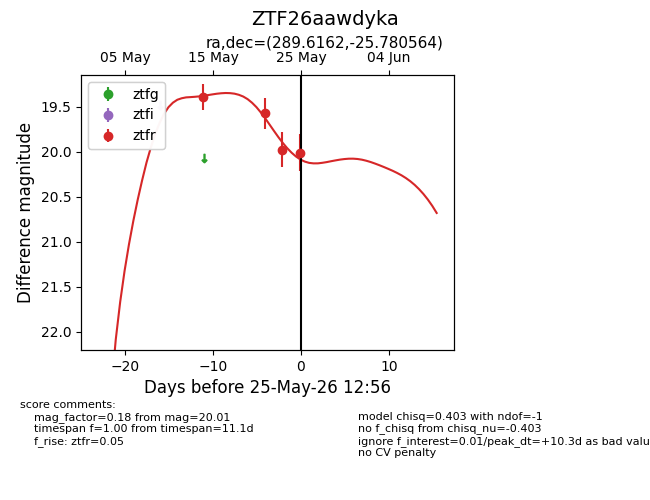
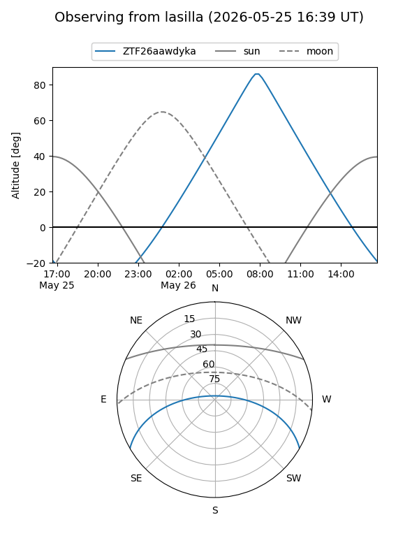
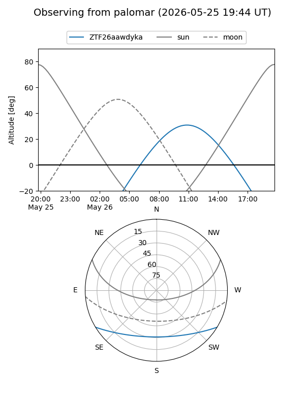
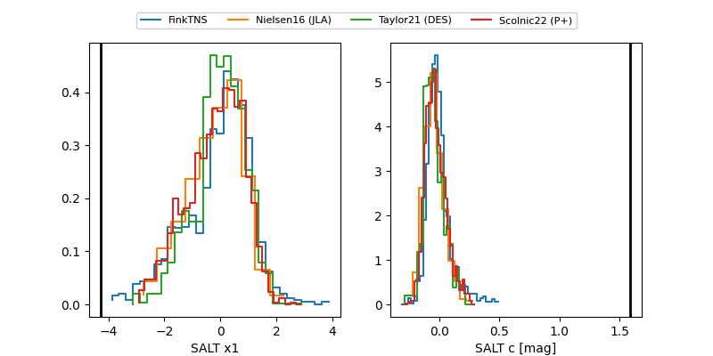

ZTF26aawdyka
Target ZTF26aawdyka at 2026-05-25 12:58
Aliases and brokers:
lsst-FINK: link
lsst-Lasair: link
lsst-ALeRCE: link
ztf-FINK: link
ztf-Lasair: link
ztf-ALeRCE: link
alt names
ZTF26aawdyka (ztf,fink_ztf)
Coordinates:
equatorial (ra, dec) = 289.6162,-25.78056
equatorial (HMS+DMS) = 19:18:27.89,-25:46:50.03
galactic (l, b) = (12.1829,-17.01415)
Flags:
Photometry:
last ztfr=20.01
4 ztfr detections
Lightcurve

Visibility


Additional plots
